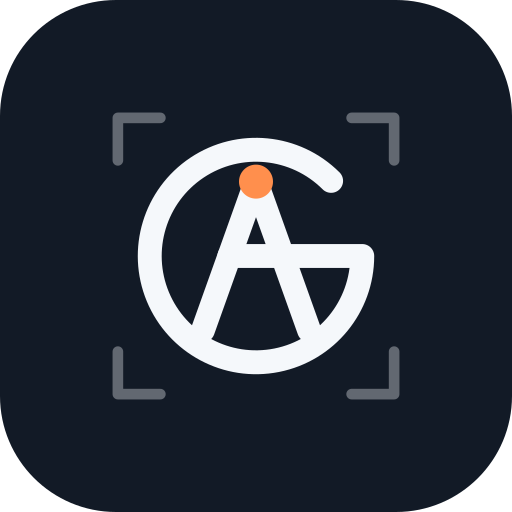

Concept
A and G drawn as one monoline: the G's arc closes into a bar that is also the A's crossbar. Viewfinder corner brackets frame it, and the apricot dot on the apex is the autofocus point, so the mark follows the site's "In Focus" idea. The animation is a focus pull: blurred to sharp, brackets lock on, strokes draw, AF dot confirms.
Variants

Palette
Ink #121A26
Field #B8D4F0
Paper #F5F8FB
Signal #FF8F4D